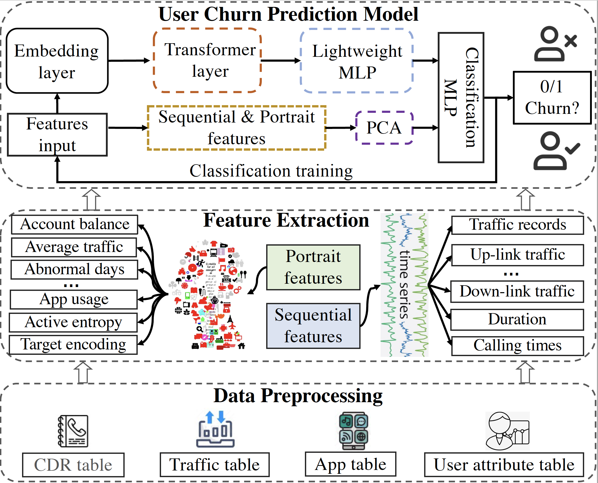
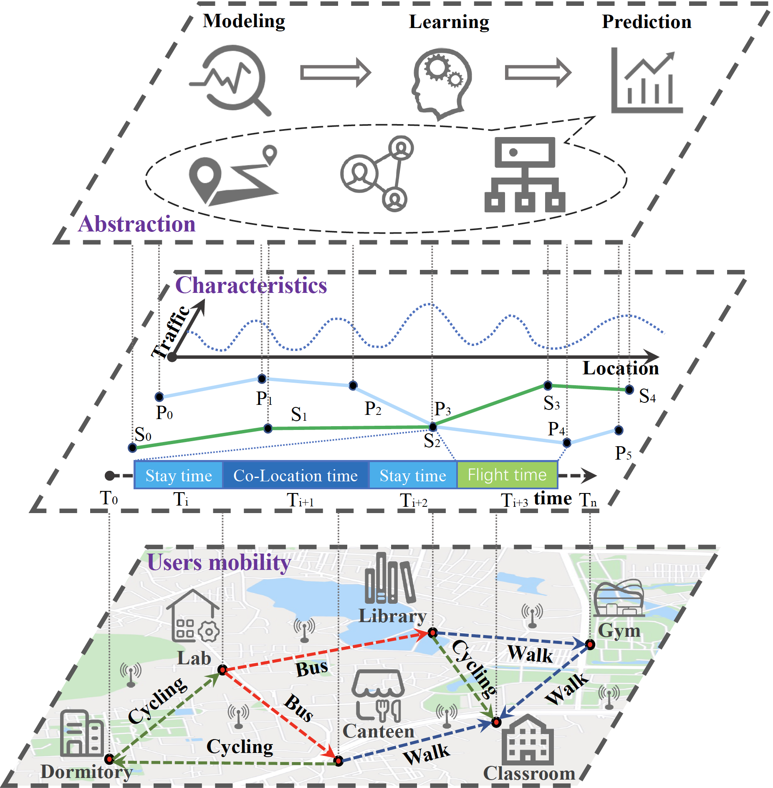
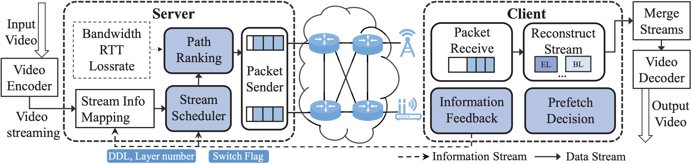

|
|  |
Recent Publications
[TMC’23] Fan Wu, Feng Lyu, Ju Ren, Peng Yang, Kai Qian, Shijie Gao, and Yaoxue Zhang. “Characterizing Internet Card User Portraits for Efficient Churn Prediction Model Design”, IEEE Transactions on Mobile Computing, DOI: 10.1109/TMC.2023.3241206, to appear. (CCF A)
[INFOCM’22] Fan Wu, Ju Ren, Feng Lyu, Peng Yang, Yongmin Zhang, Deyu Zhang, and Yaoxue Zhang. Boosting Internet Card Cellular Business via User Portraits: A Case of Churn Prediction, In Proc. IEEE INFOCOM’22, London, United Kingdom, May 2-5, 2022. (CCF A)
[ICDCS’22] Huali Lu, Feng Lyu, Ju Ren, Jiadi Yu, Fan Wu, Yaoxue Zhang, and Xuemin (Sherman) Shen. CODE: Compact IoT Data Collection with Precise Matrix Sampling and Efficient Inference, In Proc. ICDCS’22, Bologna, Italy, July 10 - 13, 2022. (CCF B)
[ICC’22]Yuan Miao, Feng Lyu, Fan Wu, Huaqing Wu, Ju Ren, Yaoxue Zhang, and Xuemin (Sherman) Shen. Mobility-Aware Service Migration for Seamless Provision: A Reinforcement Learning Approach, In Proc. IEEE ICC’22, Seoul, South Korea, May 16 - 20, 2022. (CCF C)
|  |
Recent Publications
[IoT’23] Wenxiong Chen, Mingliu Liu, Fan Wu, Huaqing Wu, Yuan Miao, Feng Lyu, Xuemin Shen. “MSM: Mobility-Aware Service Migration for Seamless Provision: A Data-Driven Approach”, IEEE Internet of Things Journal, DoI:10.1109/JIOT.2023.3265434, to appear. (Q1)
[MNET’23] Fan Wu, Feng Lyu, Huqing Wu, Ju Ren, Yaoxue Zhang, and Xuemin (Sherman) Shen. “Characterizing User Association Patterns for Optimizing Small-Cell Edge System Performance”, IEEE Network, DOI:10.1109/MNET.121.220008, to appear. (Q1)
[IWQoS’22] Feng Lyu, Xinyao Cai, Fan Wu*, Huali Lu, Sijing Duan, and Ju Ren. Dynamic Pricing Scheme for Edge Computing Services: A Two-layer Reinforcement Learning Approach, In Proc. IEEE/ACM IWQoS’22, Oslo, Norway, June 10 - 12, 2022. (CCF B)
[ICC’22] Feng Lyu, Zhe Dong, Huaqing Wu, Sijing Duan, Fan Wu*, Yaoxue Zhang, and Xuemin (Sherman) Shen. Mobility-Aware Computation Offloading with Adaptive Load Balancing in Small-Cell MEC, In Proc. IEEE ICC’22, Seoul, South Korea, May 16 - 20, 2022. (CCF C)
[TVT’22] Weimin Li, Qin Li, Lin Chen, Fan Wu*, and Ju Ren. A Storage Resource Collaboration Model among Edge Nodes in Edge Federation Service, IEEE Transactions on Vehicular Technology, vol. 71, no. 9, pp. 9212-9224, Jun. 2022. (Q1)
[JIoT’21] Fan Wu, Wang Yang, Jialun Lu, Feng Lyu, Ju Ren, and Yaoxue Zhang. RLSS: A Reinforcement Learning Scheme for HD Map Data Source Selection in Vehicular NDN, IEEE Internet of Things Journal, vol. 9, no. 13, pp. 10777-10791, Nov. 2021. (Q1)
[JIoT’21] Wenxiong Chen, Feng Lyu, Fan Wu, Peng Yang, and Ju Ren. FLAG: Flexible, Accurate, and Long-Time User Load Prediction in Large-Scale WiFi System Using Deep RNN, IEEE Internet of Things Journal, vol. 8, no. 22, pp. 16510-16521, Nov. 15, 2021. (Q1)
[TVT’21] Wenxiong Chen, Feng Lyu, Fan Wu, Peng Yang, Guangtao Xue and Minlu Li. Sequential Message Characterization for Early Classification of Encrypted Internet Traffic, IEEE Transactions on Vehicular Technology, vol. 70, no. 4, pp. 3746-3760, April 2021. (Q1)
[TNSM’20] Fan Wu, Wang Yang, Ju Ren, Feng Lyu, and Muhua Sun. Multi-Path Selection and Congestion Control for NDN: An Online Learning Approach. IEEE Transactions on Network and Service Management, IEEE Transactions on Network and Service Management, vol. 18, no. 2, pp:1977-1989, Dec. 2020. (Q1)
[MWC’20] Feng Lyu, Fan Wu, Yongmin Zhang, Jiang Xin, and Xueling Zhu. and Micro Services Provisioning in Space-Air-Ground Integrated Networks, IEEE Wireless Communications, vol. 27, no. 6, pp. 68-74, December 2020. (Q1)
|  |
Recent Publications
[TMM’21] Fan Wu, Wang Yang, Ju Ren, Feng Lyu, Peng Yang, Yaoxue Zhang, and Xuemin (Sherman) Shen. NDN-MMRA: Multi-Stage Multicast Rate Adaptation in Named Data Networking WLAN. IEEE Transactions on Multimedia, vol. 23, no. 10, pp. 3250–3263, Oct. 2021. (Q1, CCF B)
[ICN’21] Wang Yang, Fan Wu, and Kaijin Tian. High Performance Adaptive Video Streaming using NDN WLAN Multicast, In Proc. ACM ICN’21, September 22-14, 2021, Paris, France.
[IPCCC’21] Wang Yang, Jing Cao, and Fan Wu. Adaptive Video Streaming with Scalable Video Coding using Multipath QUIC, In Proc. IEEE IPCCC. Virtual Conference. Oct.28-30, 2021, pp.1-7. (CCF C)
[ToIT’21] Zhengyu Fan, Wang Yang, Fan Wu, Jin Cao, and Weisong Shi, Serving at the Edge: An Edge Computing Service Architecture Based on ICN. ACM Transactions on Internet Technology, vol. 22, no. 1, pp. 1-27, Oct. 14, 2021. (Q2)
[INFOCOM’20WP] Fan Wu, Wang Yang, Ju Ren, Feng Lyu, Xiaojie Ding, and Yaoxue Zhang. Adaptive Video Streaming Using Dynamic NDN Multicast in WLAN, in Proc. IEEE INFOCOM’20 (Workshop), Toronto, Canada, July 6-9, 2020.
[TVT’20] Fan Wu, Wang Yang, Ju Ren, Feng Lyu, Peng Yang, Yaoxue Zhang, and Xuemin (Sherman) Shen. Named Data Networking Enabled Power Saving Mode Design for WLAN. IEEE Transactions on Vehicular Technology, 69(1):901-913,2020. (Q1)
[HPCC’20] Xiaojie Ding, Wang Yang, Fan Wu, Adaptive Video Streaming Transmission Mechanism Based on Wireless NDN, in Proc. IEEE HPCC, FIji, December 14-16, 2020. (CCF C)
[ICC’19] Fan Wu, Wang Yang, Ju Ren, Feng Lyu, Peng Yang, Yaoxue Zhang, and Xuemin (Sherman) Shen. Cutting Down Idle Listening Time: A NDN-Enabled Power Saving Mode Design for WLAN, in Proc. IEEE ICC . Shanghai, China, 20-24 May, 2019, pp.1–6. (CCF C)
[TST’18] Fan Wu, Wang Yang, Runtong Chen, and Xinfang Xie. Broadband Communications for High Speed Trains via NDN Wireless Mesh Network. Tsinghua Science and Technology, 23(4):419-430, 2018. (Q2)
[ICCCN’18] Fan Wu, Wang Yang, Zhenyu Fan, and Kaijin Tian. Multicast Rate Adaptation in WLAN via NDN, in Proc. IEEE ICCCN, Hangzhou, China. 2018, pp.1-8. (CCF C)